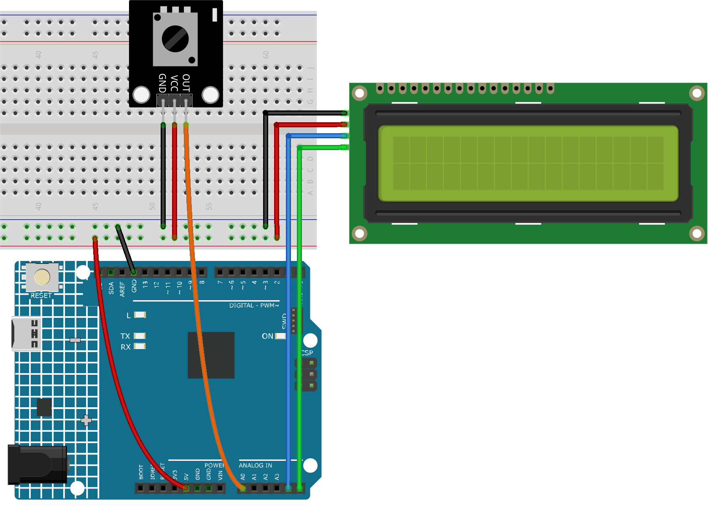

Note
Hello, welcome to the SunFounder Raspberry Pi & Arduino & ESP32 Enthusiasts Community on Facebook! Dive deeper into Raspberry Pi, Arduino, and ESP32 with fellow enthusiasts.
Why Join?
Expert Support: Solve post-sale issues and technical challenges with help from our community and team.
Learn & Share: Exchange tips and tutorials to enhance your skills.
Exclusive Previews: Get early access to new product announcements and sneak peeks.
Special Discounts: Enjoy exclusive discounts on our newest products.
Festive Promotions and Giveaways: Take part in giveaways and holiday promotions.
👉 Ready to explore and create with us? Click [here] and join today!
Potentiometer scale value
This project is designed to read the value from a potentiometer and display the read value on an LCD 1620 with an I2C interface. The value is also sent to the serial monitor for real-time viewing. A unique feature of this project is the visual representation of the potentiometer’s value on the LCD, displaying a bar that varies in length corresponding to the value.
1. Build the Circuit


2. Code
Open the
10-Potentiometer_scale_value.inofile under the path ofultimate-sensor-kit\code\fun_project\10-Potentiometer_scale_value, or copy this code into Arduino IDE.
3. Code explanation
The project functions by continually reading the value from a connected potentiometer. This value is then mapped to a smaller scale (0-16) and represented both numerically and visually on the LCD. By checking the difference between consecutive readings, the code ensures that only significant changes are reflected on the display, thereby reducing jitter. Reducing jitter helps avoid undesirable visual effects resulting from frequent refreshing of the LCD screen.
Library Inclusion and Initialization:
#include <Wire.h> #include <LiquidCrystal_I2C.h> LiquidCrystal_I2C lcd(0x27, 16, 2);
Here, the required libraries (
Wirefor I2C communication andLiquidCrystal_I2Cfor the LCD) are included. An LCD object is created with the I2C address0x27and is defined to have16columns and2rows.Variable Declaration:
int lastRead = 0; // Previous potentiometer value int currentRead = 0; // Current potentiometer value
lastReadstores the previously read potentiometer value.currentReadwill store the current reading from the potentiometer.setup() Function:
void setup() { lcd.init(); // Initialize the LCD lcd.backlight(); // Turn on the LCD backlight Serial.begin(9600); // Start serial communication at 9600 baud rate }
The LCD is initialized, its backlight is turned on, and serial communication is started at a baud rate of
9600.Main Loop:
void loop() { int currentRead = analogRead(A0); int barLength = map(currentRead, 0, 1023, 0, 16); if (abs(lastRead - currentRead) > 2) { lcd.clear(); lcd.setCursor(0, 0); lcd.print("Value:"); lcd.setCursor(7, 0); lcd.print(currentRead); Serial.println(currentRead); for (int i = 0; i < barLength; i++) { lcd.setCursor(i, 1); lcd.print(char(255)); } } lastRead = currentRead; delay(200); }
The potentiometer value is read and mapped to a bar length (0-16).
If the difference between the last and current reading is more than
2, the LCD is updated.The value is printed on the first row and a bar (based on the mapped value) on the second row.
The value is also sent to the serial monitor.
Before the next iteration,
lastReadis updated, and a delay of200msis introduced for stability.